|
This page presents images I've found or captured detailing the Key To Time. The Key was the subject of
the six stories of Season 16. The Key consists of six Segments and the Tracer.
Brigitte and Dalex created a PDF file for a half-scale model of the segments. You'll want to fold things so that the writing/colored sides are on the inside of the segments. |
| 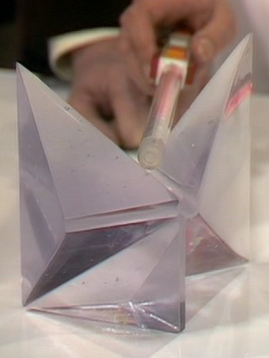 | 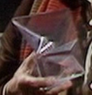 |
| 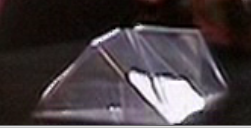 | 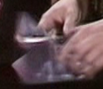 | 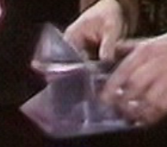 |
| 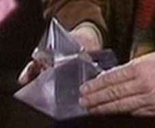 | 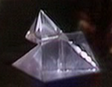 |  First and Second Segment assembled. |
| 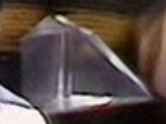 | 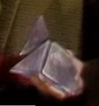 | 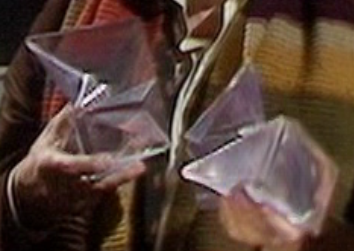 First? and Third Segments |
|
| 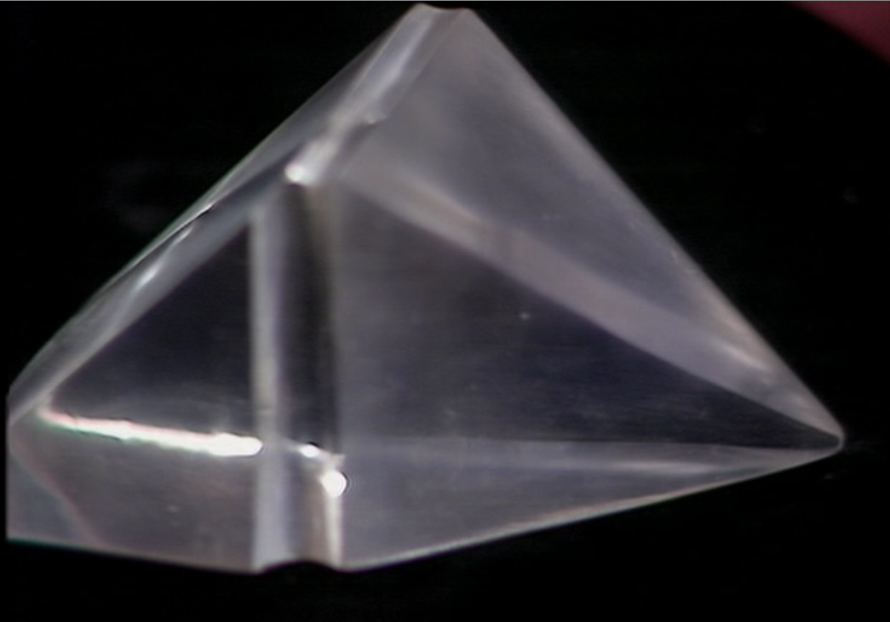 | |||
| 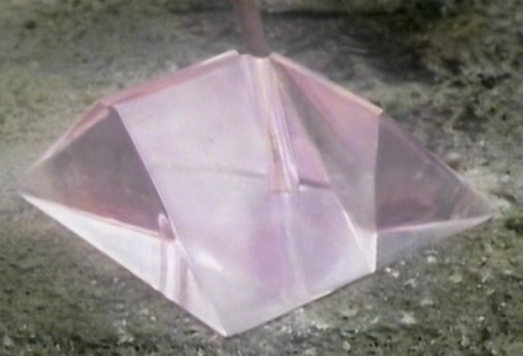 | |||
| 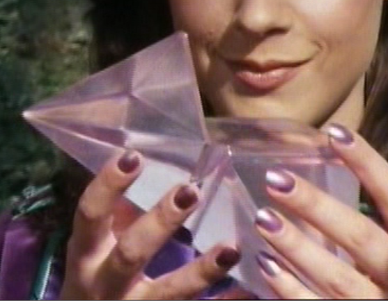 | |||
| 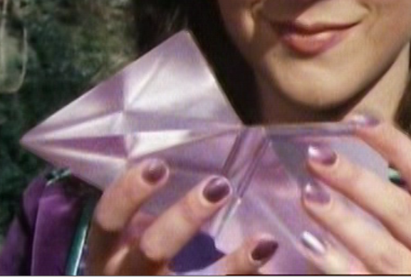 | |||
| 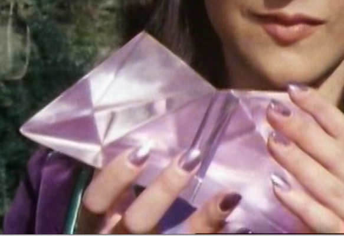 | |||
| 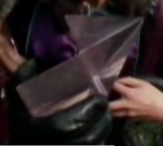 | 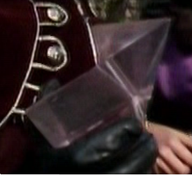 | ||
| 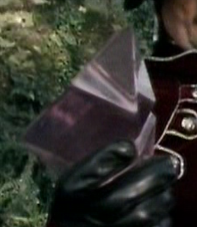 | 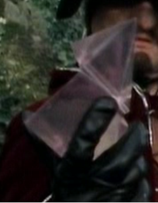 | ||
| 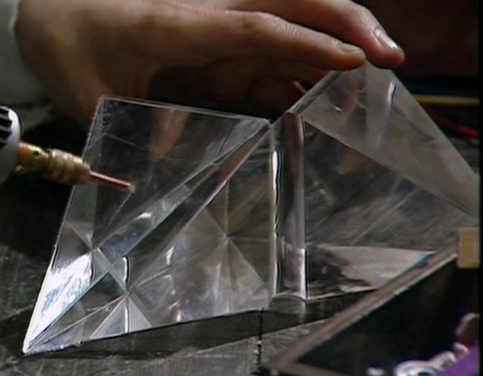 | |||
| 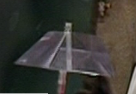 | |
| 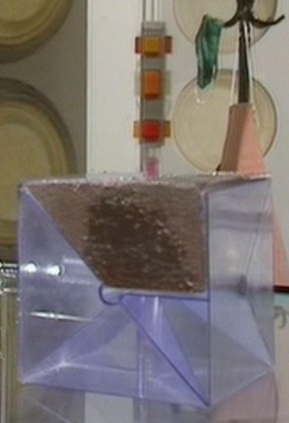 | 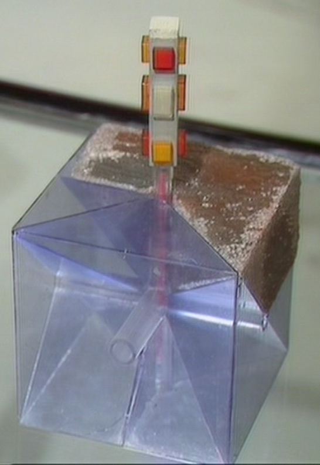 |
| 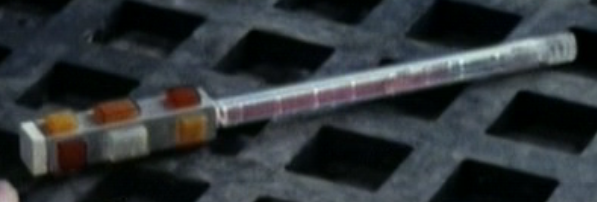 |
| 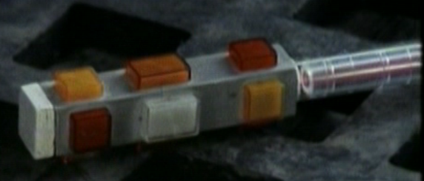 |